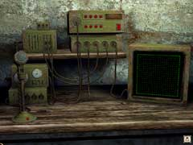

| 概要 | 地図 |
| 淡いヒント集 | ヒント集 | 的確なヒント集 |
| 攻略最短ルート |
| 場所選択に戻る |
雪山

眠ったまま木に引っかかったボリスを起こすにはどうしたらよいだろうか? まずは、彼が着いているヘッドフォンに音声を送る方法を考えよう。 飛行機のコックピットを見てみると様々なスイッチとメーターが見える。 画像を見ると分かると思うが、正面のパネルには、赤と黄色と緑のスイッチがそれぞれ2つずつあるはずだ。さらに言えば、それ以外のスイッチは全く意味がない。これをうまく操作することで、この飛行機の使っている周波数が分かるはずだ。 周波数が分かったら、この無線設備のある場所へ行ってみよう。

ここにある装置のスイッチを入れて動くようにしよう。周波数帯を飛行機のものにあわせ、レーダー(アンテナ)を飛行機のある向きに設定しよう。 アンテナは鉄塔の上のハンドルで向きを変えられる。Bの位置にすると、飛行機の向きとなる。下のレーダーが反応するかどうかで、向きが正しいかどうかが分かる。 全ての設定が終わったら、マイクを使って話しかけてみよう。 |
| 場所選択に戻る |
| 概要 | 地図 |
| 淡いヒント集 | ヒント集 | 的確なヒント集 |
| 攻略最短ルート |
Syberia II
| 目次へ戻る | ページの上部へ |